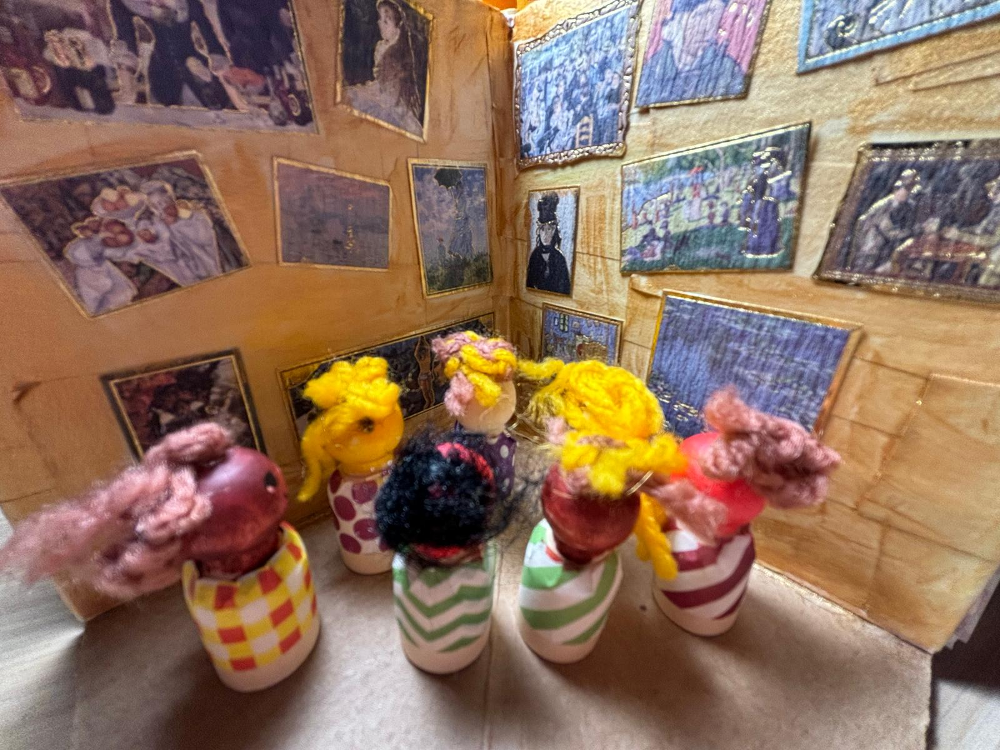
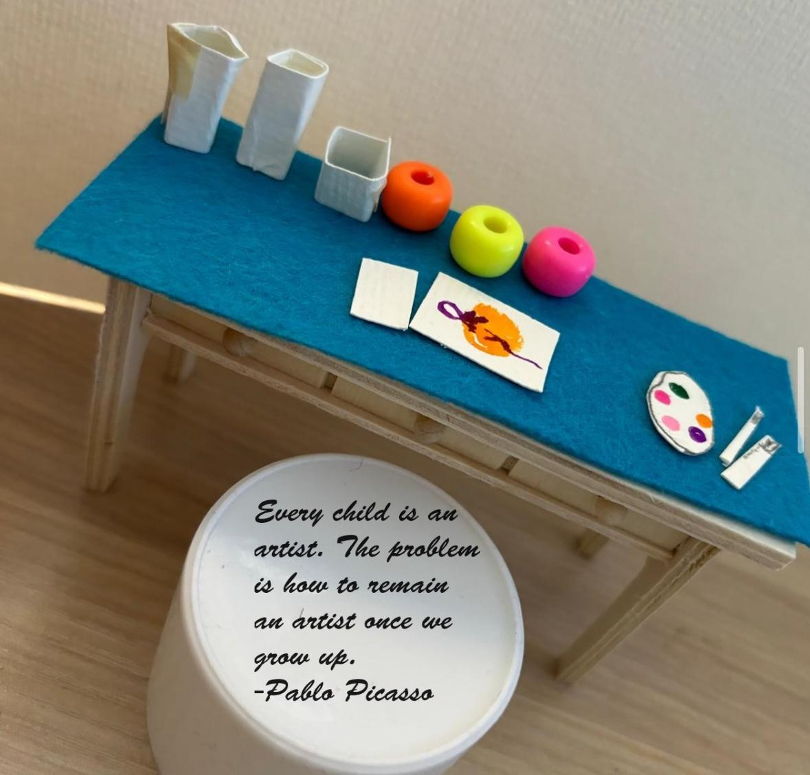

The SaltyTree Story 鹽樹的故事
At SaltyTree, we explore, discover, and celebrate creativity and resilience together. The name SaltyTree speaks of a tree that finds its way within a specific landscape, transforming a harsh, salt-laden ground into an established tree. 在鹽樹，我們一同探索、發掘並慶祝那份創造力與韌性。鹽樹的名字，訴說著一棵在特定地景中尋得出口的樹，它將嚴酷且充滿鹽分的土地，轉化為穩固佇立的樹木。
Yet, we also deeply know that no tree can grow isolated from the ecosystem; our growth is always shaped by the environment and soil we inhabit. But please remember, you are never the burdens you carry. In art therapy, personal identity remains distinct from individual hardships. 然而，我們也深知沒有一棵樹能孤立於生態之外；我們的成長總受到所處環境與土壤的形塑。但請記得，你永遠不等於你所背負的重擔。在藝術治療中，個人身份始終獨立於個人的困境之外。
When external challenges bring worry, anger, or fear, whether born from personal hardships or the pressures of systemic injustice and the outside world, these emotions are natural responses to difficult circumstances. We are dedicated to providing a supportive space where you can explore and express your experiences through creative expression, regardless of the scale of the environment. 當外部挑戰帶來憂慮、憤怒或恐懼時，無論這份沉重源於個人的生命困境，或是來自外部世界與體制的壓力，這些情緒都是面對艱難處境時的自然反應。我們致力於提供一個支持性的空間，讓您能透過創造性表達來探索並抒發您的經驗，無論外部環境如何。

Experiencing Art Therapy 親歷藝術治療
Art therapy blends visual art, creative writing, and poetry to help individuals process complex emotions. The focus rests entirely on the creative process and symbolic meaning rather than artistic skill. This multi-sensory approach allows individuals to creatively express life challenges, manage anxiety, and encourage personal growth in a format distinct from traditional talk therapy. Art therapy provides a quiet sanctuary to evaluate and process experiences. Open to all skill levels and with all creative backgrounds welcome, everyone is welcome to practice and explore creative expression anchored in individual dignity and purpose. 藝術治療結合了視覺藝術、創意寫作與詩歌，陪伴個人梳理與處理複雜的情緒。焦點完全放在創作過程與象徵意義上，而非藝術技巧本身。這種多感官的方法讓人們能以不同於傳統談話治療的形式，創造性地表達生命挑戰、管理焦慮，並促進個人成長。藝術治療提供了一個寧靜的避風港來審視與整合經驗。我們歡迎所有創作背景與能力層級的人士，在個體尊嚴與目標的基礎上，共同實踐與探索創造性表達。
Diverse and flexible channels of expression are available, designed to support you as you externalize and reshape your experiences through the creative process. We provide a structured space where you can create with privacy and safety, ensuring that your creative output receives full respect and professional acknowledgment. 我們提供多元且彈性的表達管道，旨在支持您透過創作歷程將內在經驗具象化並重新形塑。我們提供結構化的空間，讓您可以在隱私與安全感中進行創作，確保您的作品獲得充分的尊重與專業認可。
Through color, line, shape, and texture, we help you give visible form to complex ideas that are difficult to put into words. This approach engages your experiences and your relationship with the outside world through art materials. Whether your work involves building, layering, dismantling, or simply processing difficult emotions, the creative process offers tangible opportunities for exploration and expression. 透過色彩、線條、形狀與質地，我們協助您將那些難以用言語表達的複雜想法賦予可見的形狀。這種方法透過藝術媒材觸及您的經驗以及您與外在世界的連結。無論您的創作包含建構、堆疊、拆解，抑或僅僅是抒發沉重的感受，創作歷程都提供了切實的探索與表達契機。
This process centers on your strengths while honoring your individual pace. We provide active partnership and guidance through goal-oriented sessions, focusing on helping you identify your skills and find practical tools to move forward—whether that means developing strategies to regain focus, gaining clarity on your next steps, or fostering a renewed sense of vitality, voice, and confidence. 這個歷程以您的優勢為核心，同時敬重您個人的步調。我們在目標導向的會談中提供積極的夥伴關聯與引導，著重於協助您辨識自身的技能，並尋得邁步向前的實用工具——無論那是建立重新聚焦的策略、明確下一步的思路，抑或是重拾活力、發聲與自信。

Individual Support 個人支援
A private therapeutic space to explore your experiences through creative expression. Through a thoughtful choice of art materials and dedicated dialogue, support is provided whether the goal is navigating a challenging season, building measurable resilience, or expanding personal potential within a secure therapeutic framework. 一個專屬的專業支持空間，透過創造性表達來探索您的經驗。透過精心挑选的藝術媒材與專屬對話，無論目標是度過艱難的季節、建立可衡量的韌性，還是在安全的專業框架內拓展個人潛能，我們都將提供全力支持。
Workshops and Groups 工作坊及小組
A structured therapeutic space to explore your experiences alongside a supportive community. Through guided art-making and reflective dialogue, participants address diverse emotional experiences to use creative expression within a grounded therapeutic framework to foster concrete insight, peer connection, and practical resilience. 一個結構化的專業支持空間，讓您在支持性的社群中探索您的經驗。透過引導式的藝術創作和反思對話，參與者共同面對多元的情緒體驗，在穩固的框架中運用創造性表達，培養具體的洞察力、同儕連結與實用韌性。
Open Studio 開放工作室
A welcoming creative space to process and address difficult experiences with professional support available. This session provides the freedom of self-directed creation, allowing your creativity to unfold whether you choose to work independently or create alongside a quiet community. 一個溫馨且包容的創作空間，在專業人員的支持下，梳理與處理困境。此會談提供自主創作的自由，不論您選擇獨立創作，抑或是留在安靜的社群圈中一同創作，都能讓您的創造力自在綻放。
Art Therapist Beverly Chan 藝術治療師 陳欣慈
Hello, and welcome. I am Beverly Chan. 你好，歡迎。我是陳欣慈 (Beverly)。
I am an art therapist, a Christian artist, and a graduate of the Vancouver Art Therapy Institute. Throughout my journey, I have supported individuals from diverse backgrounds, including those navigating learning differences, health challenges, the emotional adjustments surrounding changes in memory and cognition, and experiences of personal loss. Over time, I have come to see how each person’s story holds the power to grow, to connect, and to influence others. 我是一位藝術治療師、基督徒藝術家，畢業於溫哥華藝術治療學校（Vancouver Art Therapy Institute）。在我的執業歷程中，我曾支援來自不同背景的人士，包括面對學習差異、健康挑戰、圍繞記憶與認知變化的情緒適應，以及經歷個人喪失的個案。隨著時間的推移，我深切看見每個人的故事都擁有成長、連結及影響他人的力量。
In my sessions, I aim to offer a welcoming space that facilitates artmaking through a person-centred, strengths-based philosophy. I believe art therapy can be a meaningful gift for many, as small acts of artmaking create opportunities to communicate, explore experiences, and foster resilience. 在我的治療會談中，我提供一個包容溫暖的空間，以人為本和優勢導向的哲學來促進藝術創作。我深信藝術治療是送給許多人的珍貴禮物，因為微小的藝術創作行為能為溝通、探索經驗與召喚韌性創造契機。
My Practice Framework 我的專業實踐框架
In this work, I define professionalism as the act of maintaining a responsive, ethical, and structured framework for support and growth. Much like a resilient coastal ecosystem that stands firm against storms, I look to the interconnectedness of our shared environment to inform my professional values. Inspired by crabs, this framework outlines my approach to therapeutic containment, adaptive practice, and contextual awareness: 在工作之中，我將「專業」定義為維持一個具回應力、合乎倫理且結構化的支持與成長框架。就像一個能抵抗風暴的堅韌海岸生態系統，我依循我們共享環境的相互連結來塑造我的專業價值。受到螃蟹的啟發，此框架概述了我對於專業承載、彈性實踐及環境覺察的方法：
Empathy & Boundaries (The Claws & The Waves) 同理與邊界（雙螯與波浪）
Where two claws make contact, the imagery captures the protective nature inherent in new encounters. While waves symbolize the dynamic nature of relationships, the intersecting blue lines represent the complex emotions exchanged in our interactions. My intention is to maintain a vital balance between empathy and therapeutic containment, ensuring a secure, structured space where your experiences and emotions can be explored. 在雙螯接觸的意象中，捕捉了新相遇中固有的保護本能。波浪象徵關係中的動態變化，而交織的藍色線條代表互動中交流的複雜情緒。我的目標是在同理與專業承載之間維持至關重要的平衡，確保建立一個安全且結構化的空間，讓您的經驗與情緒能得到深刻探索。
Adaptive Support (Flexibility & Responsiveness) 彈性支援（靈活與回應）
Reflected in the flexibility of the crab, this framework mirrors the changing conditions of the sea. Rather than applying a rigid, one-size-fits-all formula, I adapt my approach to your individual needs, lived experiences, and circumstances while maintaining a consistent therapeutic framework. 正如螃蟹的靈活性所展現，此框架映照出海洋多變的環境。我不會套用死板、一成不變的公式，而是根據您個人的需求、生命經驗與處境來調整我的方法，同時始終維持穩固一致的治療框架。
Sensitivity & Awareness (The Ripple Effect) 敏感度與覺察（漣漪效應）
Where a crab rests at a ripple, subtle blue lines trace the invisible currents of the surrounding environment. This symbolizes an awareness of the context each person brings into the therapeutic space. Just as a coastal ecosystem is shaped by the conditions around it, I strive to remain responsive to the systemic factors, environments, cultures, and diverse backgrounds that influence the lives of those I support. 當螃蟹停歇在漣漪之處，細微的藍色線條描繪出周圍環境隱形的洋流。這象徵著對每個人帶入治療空間之脈絡與背景的敏銳覺察。正如海岸生態系統受其周遭條件的形塑，我努力對影響我所支持者生命的系統性因素、環境、文化及多元背景保持深切的回應力。
Registered Arts Therapist (AThR) 註冊藝術治療師 (AThR)
ANZACATA Professional Directory
Art Therapist (DVATI) 藝術治療師 (DVATI)
Credentialed professional, Vancouver Art Therapy Institute (Canada) 專業資質，加拿大溫哥華藝術治療學校
MA in School and Community Psychology 學校與社區心理學碩士
Applied psychology, community services, and youth support 具備應用心理學、社區服務及青少年支援背景
Postgraduate Diploma in Education (PGDE) 學位教師教育文憑 (PGDE)
Specialized knowledge in early childhood education & care 專修幼兒教育與發展領域知識
BA in Graphic Design (Hons) 平面設計文學士 (榮譽)
Visual design and communications background 具備視覺設計與傳播背景
Data Collection & Privacy Policy
SaltyTree collects personal information, health intake data, and digital artwork solely to provide professional art therapy and wellness services.
Telehealth sessions are conducted using encrypted video conferencing software (such as Zoom). To ensure privacy, therapeutic sessions are never recorded, and session data is not stored within the video platform.
In compliance with international data privacy frameworks—including the Hong Kong Personal Data (Privacy) Ordinance (PDPO), the Australian Privacy Act, the New Zealand Privacy Act, the Singapore Personal Data Protection Act (PDPA), and the Canadian Personal Information Protection and Electronic Documents Act (PIPEDA)—all sensitive health data and client-created artwork is processed and stored using secure, encrypted systems.
We do not store therapeutic records or intake assessments on public web servers or standard email servers. You retain the right to access, correct, or request the deletion of your personal data at any time, subject to statutory healthcare record retention laws in your local jurisdiction.
資料收集與隱私政策
鹽樹（SaltyTree）收集個人資料、健康評估數據及數位藝術作品，純粹用於提供專業藝術治療與身心安適服務。
遠距視訊會談使用加密視訊會議軟體（例如 Zoom）進行。為了保障隱私，專業會談絕不錄音或錄影，且會談數據不會儲存於視訊平台中。
為了符合國際數據隱私框架——包括香港《個人資料（私隱）條例》（PDPO）、澳洲《隱私法》、紐西蘭《隱私法》、新加坡《個人資料保護法》（PDPA）以及加拿大《個人資訊保護與電子文件法》（PIPEDA）——所有敏感性健康數據及個案創作之藝術作品均使用安全且加密的系統進行處理與儲存。
我們不會在公開的網頁伺服器或標準電子郵件伺服器上儲存專業紀錄或個案評估資料。在符合您當地法定健康紀錄保存期限的規範下，您有權隨時查閱、更正或要求刪除您的個人資料。
SaltyTree is an arts therapy and wellness practice currently undergoing formal corporate registration. All professional art therapy services are delivered exclusively by a Registered Arts Therapist (AThR). Due to professional registration boundaries and international telehealth regulations, formal therapeutic sessions are strictly restricted to residents of Australia, New Zealand, Singapore, Hong Kong SAR, and select Canadian provinces (British Columbia, Alberta, Saskatchewan, and Manitoba).
SaltyTree is not a crisis center. If you are experiencing a mental health emergency, please immediately contact your local emergency response team or regional crisis helpline.
鹽樹（SaltyTree）為目前正在辦理正式公司註冊程序之藝術治療與身心安適工作室。本工作室所有專業藝術治療服務均由註冊藝術治療師（AThR）親自提供。受限於專業註冊邊界及國際遠距醫療法規，正式的專業會談服務僅限於居住在澳洲、紐西蘭、新加坡、香港特別行政區，以及加拿大指定省份（不列顛哥倫比亞省、亞伯達省、薩斯徹溫省和曼尼托巴省）的居民。
鹽樹並非緊急求助或危機干預中心。若您正經歷急性心理健康危機，請立即聯絡您當地的緊急救援團隊或區域危機求助熱線。
Complete Policies & General Disclaimer
1. Informational and Educational Purposes Only
The public content provided on this Website, including text, graphics, public art prompts, images, exercises, and blog posts, is provided for general informational and educational purposes only. All content on this Website is the intellectual property of SaltyTree and is protected under the copyright laws of the Hong Kong Special Administrative Region. No content may be reproduced, redistributed, or used for commercial purposes without the prior written consent of SaltyTree.
2. No Therapist–Client Relationship
Your access to or use of this Website—including downloading materials, interacting with public prompts, or communicating with SaltyTree or its practitioners through the Website or social media—does not establish a therapist–client relationship. Professional art therapy services are provided only after completion of the intake process, confirmation of eligibility under applicable regional regulations, and the execution of a signed service agreement. A therapist–client relationship is established only after these requirements have been satisfied.
3. Not a Substitute for Mental Health Treatment
The public resources available on this Website are not a substitute for professional therapeutic advice, individualized psychotherapy, medical advice, or psychiatric treatment. Art therapy services are intended to complement, not replace, appropriate medical, psychiatric, psychological, or neuropsychological care. Always seek the advice of a qualified, locally licensed mental health professional or physician regarding severe psychological symptoms or medical conditions.
4. Assumption of Risk and Personal Responsibility
Engaging in creative arts activities and exploring emotional topics may evoke strong emotions or memories. By voluntarily using the art prompts, exercises, or other public resources available on this Website, you acknowledge and accept the inherent risks associated with such activities. SaltyTree is not liable for any loss, injury, or emotional distress arising from the independent use of publicly available Website content.
5. Telehealth Technology & Connection Interruptions
SaltyTree utilizes third-party digital platforms, video conferencing software, online booking systems, and internet infrastructure to provide online art therapy services. While reasonable efforts are made to maintain reliable services, digital communications may be affected by connection interruptions, software errors, hardware failures, server downtime, or other technical issues beyond our reasonable control. SaltyTree is not responsible for delays, interruptions, or cancellations resulting from such technical issues.
6. Cybersecurity & Data Security
SaltyTree uses reasonable administrative, technical, and organizational safeguards, including secure practice management systems where appropriate, to protect client information. However, no method of electronic transmission over the internet or electronic storage system can be guaranteed to be completely secure. By submitting information through this Website or via electronic communication, you acknowledge the inherent security risks associated with internet-based communications.
7. Geographic Eligibility & Cross-Border Services
SaltyTree provides professional art therapy services only in jurisdictions where services can be offered in accordance with applicable professional registration requirements and relevant laws. Clients are responsible for providing accurate information regarding their identity and physical location when accessing services. SaltyTree reserves the right to decline, suspend, or terminate services where eligibility cannot be verified.
8. Website Analytics, Cookies & Technical Information
This Website automatically collects standard technical information, including IP addresses, browser type, device information, and cookies, to support Website functionality, security, performance monitoring, and analytics. SaltyTree does not sell client information or personal information collected through the Website for marketing purposes.
9. Governing Law & Jurisdiction
These Terms and your use of this Website shall be governed by and construed in accordance with the laws of the Hong Kong Special Administrative Region, without regard to its conflict of law principles. Any dispute arising out of or relating to this Website shall be subject to the exclusive jurisdiction of the courts of HKSAR.
10. Compliance with Local Laws & Severability
SaltyTree operates internationally but does not represent or warrant that its Website or art therapy services comply with the legal requirements of every jurisdiction. SaltyTree reserves the right to modify or restrict services to comply with applicable laws. If any provision is found invalid, remaining terms shall remain in full force.
完整條款與免責聲明
1. 僅供資訊與教育目的
本網站提供之所有公開內容，包括文字、圖表、公開藝術提示、圖片、練習及部落格文章，僅供一般資訊與教育目的使用。本網站之所有內容均屬鹽樹之知識產權，並受香港特別行政區版權法保護；未經明確書面許可，不得進行複製、重新分發或用於商業用途。
2. 無治療師與個案關係
您對本網站的瀏覽、下載資料、使用公開提示，或透過網站、社交媒體與鹽樹（SaltyTree）或其執業者進行任何溝通，均不構成治療師與客戶（個案）關係。正式的專業會談關係，僅在完成初始健康評估、確認所在地地點與符合區域法規資格，並由雙方簽署正式服務協議後建立。
3. 不可替代心理健康治療
本網站之公開資源不可替代專業的藝術會談建議、個別化心理諮商、醫療諮商或精神科治療。專業藝術諮商旨在補充而非替代適當的醫療、精神科、心理學或神經心理學照護。若有任何嚴重的心理症狀，請務必尋求當地合格心理健康專業人員或醫師的建議。
4. 風險承擔與個人責任
參與創意藝術活動與探索情緒議題可能會引發強烈的情緒或記憶。當您使用本網站的藝術提示或練習時，即代表您承認並接受與此類活動相關的固有風險。對於您獨立使用本網站內容所導致的任何損失或情緒困擾，鹽樹概不承擔責任。
5. 遠距傳輸技術與連線中斷
鹽樹利用第三方數位平台、視訊會議軟體、線上預約系統及網路基礎設施提供線上服務。數位通訊可能會遇到連線中斷、軟體錯誤、硬體故障或超出合理控制範圍的技術問題。鹽樹對於因技術問題導致的任何延誤或中斷概不負責。
6. 網路安全與資料安全
鹽樹採取合理的管理、技術與組織性安全措施保護客戶資訊。然而，任何透過網際網路的電子傳輸或電子儲存系統都無法保證百分之百安全。透過本網站傳輸資料，即代表您承認網路通訊的固有安全風險。
7. 地理適用資格與跨境服務
鹽樹僅在符合專業註冊要求及相關法律之司法管轄區提供專業藝術治療服務。客戶有責任在接受服務時提供關於其身份及物理位置的準確資訊。鹽樹保留在無法核實資格時拒絕或終止服務的權利。
8. 網站數據分析、Cookies 與技術資訊
本網站會自動收集標準技術資訊（如 IP 地址、瀏覽器類型、設備資訊和 Cookies），以支援網站功能、安全性與性能監控。鹽樹不會將收集的個人資訊出售用於行銷目的。
9. 準據法與管轄權
本條款及您對本網站的使用，均以中華人民共和國香港特別行政區法律為準據法，並依其解釋。任何與本網站相關的爭議，均應專屬管轄於香港特別行政區法院。
10. 符合當地法律與條款可分性
鹽樹於國際間運營，但並不保證其服務符合所有司法管轄區的法定要求。鹽樹保留修改或限制服務以符合適用法律的權利。若本條款之任何規定被認定為無效，其餘規定仍應具有完全效力。
Get in Touch 聯絡我們
Let's explore how artmaking can create a supportive space for your growth. 讓我們一同探索藝術創作如何為您的成長建立支持性空間。
Please fill out the inquiry form to get in touch regarding session availability, service details, and consultations. 歡迎填寫右側表單傳送訊息，了解會談時間、服務內容與諮詢細節。